Анимации книгиAnimations of the book
Все анимации, на которые ведут QR-коды книги «Введение в физику нейтрино».All animations linked by the QR codes of the book “Introduction to Neutrino Physics”.
Раздел «Знакомство с нейтрино»Section “First contact with the neutrino”
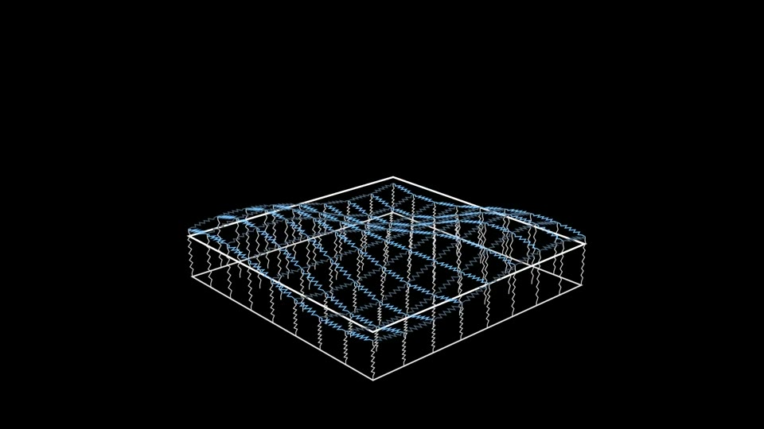
Аналогия: связанные осцилляторыAn analogy: coupled oscillatorsQR 0001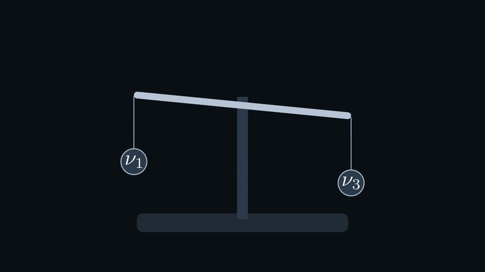
Порядок масс нейтриноThe ordering of the neutrino massesQR 0002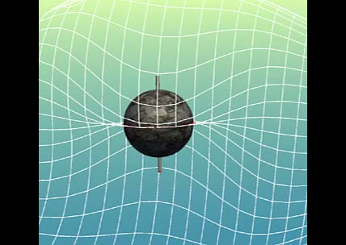
Спин и вращениеSpin and rotationQR 0003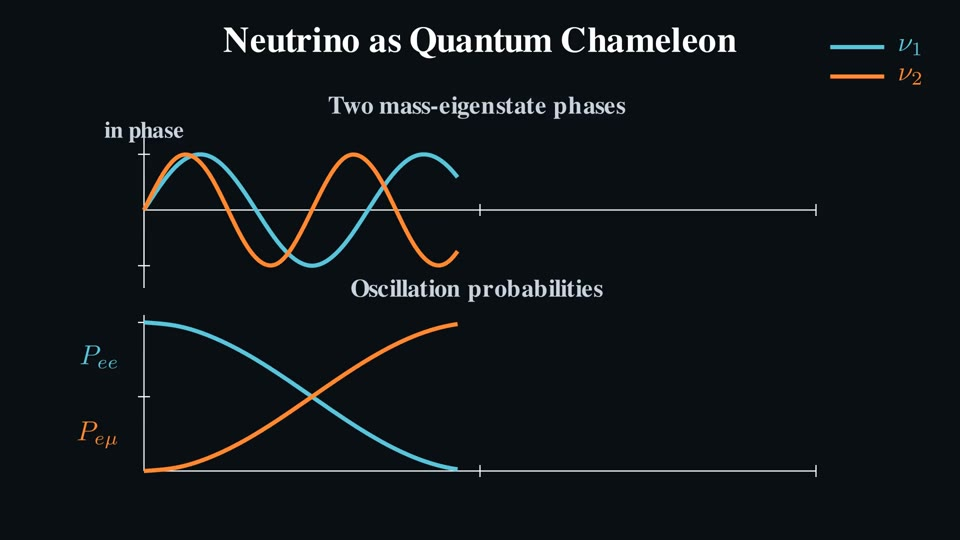
Нейтрино как квантовый хамелеонNeutrino as a quantum chameleonQR 0004
Раздел «Взаимодействия нейтрино»Section “Neutrino interactions”
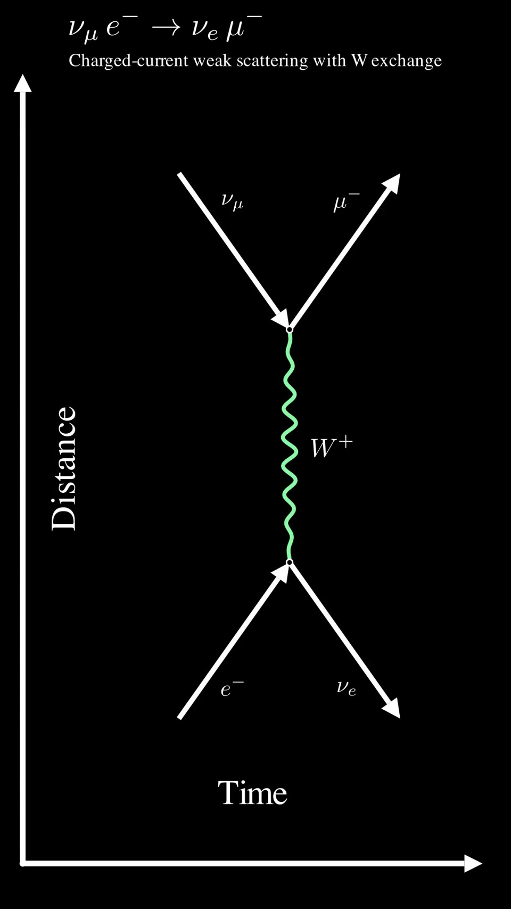
Рассеяние νμ + e → νe + μScattering νμ + e → νe + μQR 0005 Рассеяние нейтрино через Z-бозонNeutrino scattering through the Z bosonQR 0006
Рассеяние нейтрино через Z-бозонNeutrino scattering through the Z bosonQR 0006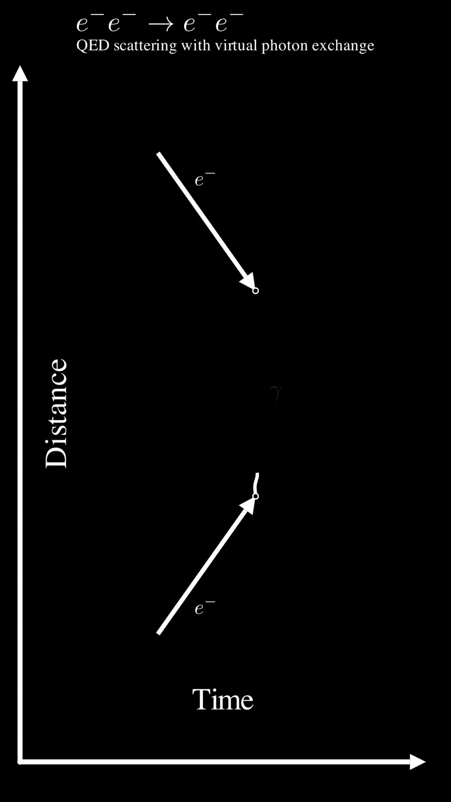
Рассеяние $e^-e^-$ с обменом фотоном$e^-e^-$ scattering with a photon exchangeQR 0007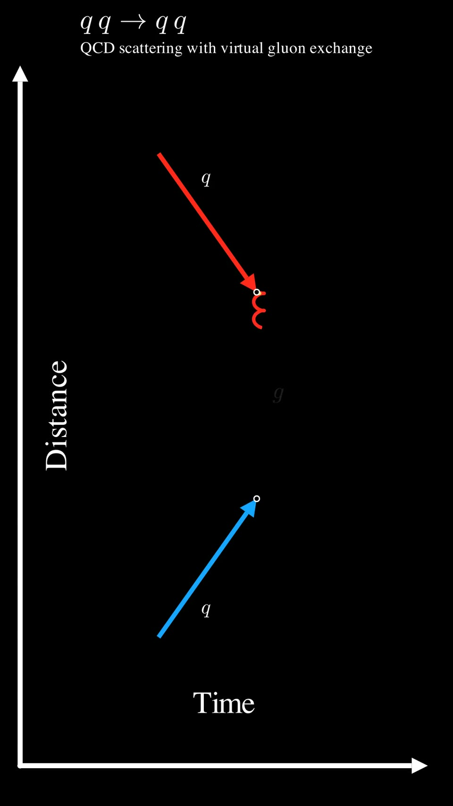
Рассеяние $qq\to qq$ с обменом глюоном$qq\to qq$ scattering with a gluon exchangeQR 0008
Раздел «Детектирование»Section “Detection”
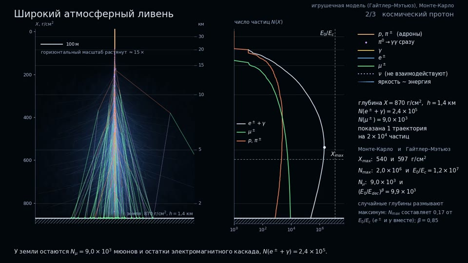
Широкий атмосферный ливеньA cosmic-ray air showerQR 0009 Как работает фотоумножительHow a photomultiplier tube worksQR 0010
Как работает фотоумножительHow a photomultiplier tube worksQR 0010 Излучение Вавилова — Черенкова: конус из волнCherenkov radiation: a cone of waveletsQR 0011
Излучение Вавилова — Черенкова: конус из волнCherenkov radiation: a cone of waveletsQR 0011
Раздел «Прямое измерение массы»Section “Direct measurement of the neutrino mass”
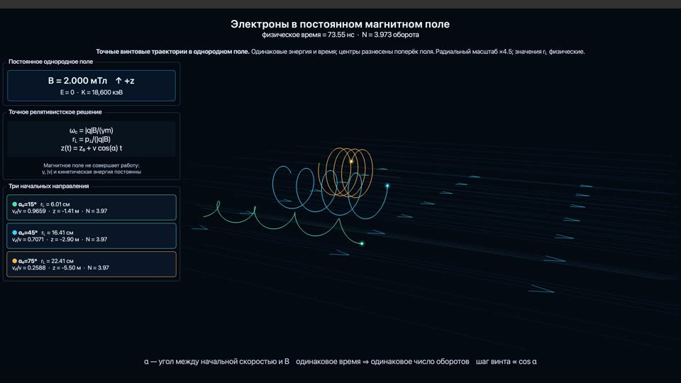
Электроны в постоянном магнитном полеElectrons in a constant magnetic fieldQR 0012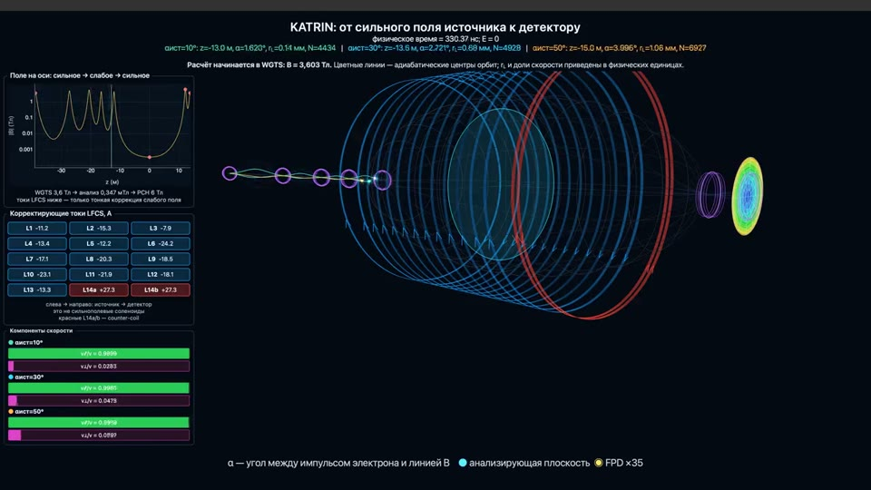
KATRIN: от сильного поля источника к детекторуKATRIN: from the strong field of the source to the detectorQR 0013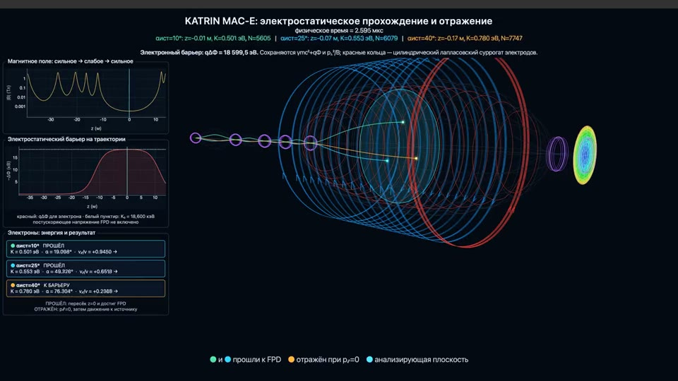
KATRIN MAC-E: прохождение и отражениеKATRIN MAC-E: transmission and reflectionQR 0014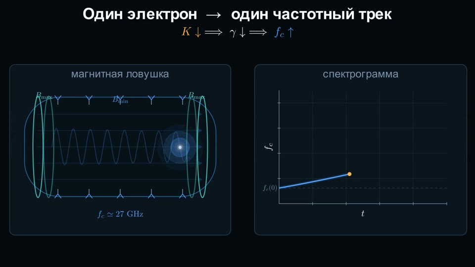
Project 8: один электрон — один частотный трекProject 8: one electron, one frequency trackQR 0015
Раздел «Вакуумные осцилляции»Section “Vacuum oscillations”
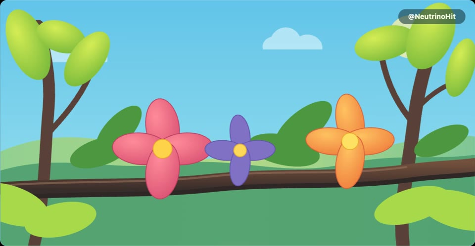
Квантовый хамелеонThe quantum chameleonQR 0016 Две массовые фазы и вероятности осцилляцийTwo mass phases and the oscillation probabilitiesQR 0017
Две массовые фазы и вероятности осцилляцийTwo mass phases and the oscillation probabilitiesQR 0017
Раздел «Осцилляции в веществе»Section “Oscillations in matter”
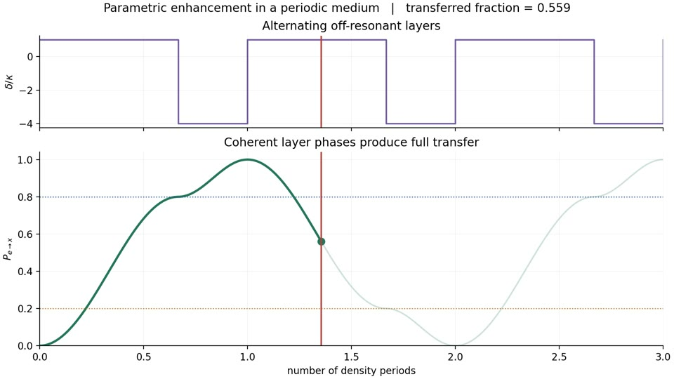
Параметрическое усиление в чередующихся слоях веществаParametric amplification in alternating layers of matterQR 0018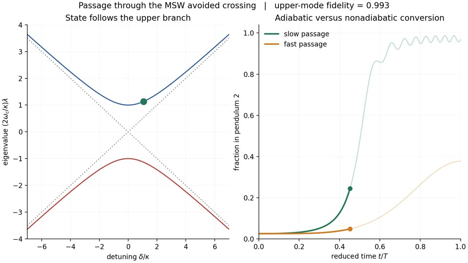
Адиабатический и неадиабатический проход через MSW-резонансAdiabatic and non-adiabatic passage through the MSW resonanceQR 0019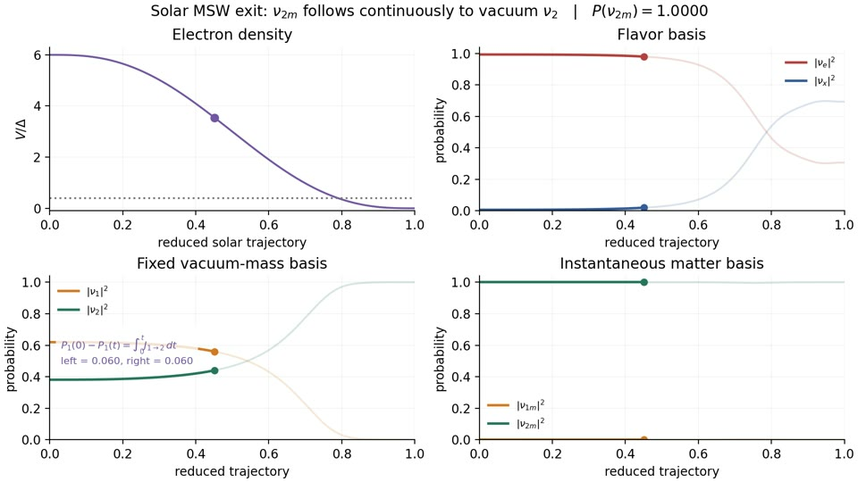
Солнечный адиабатический выход в трёх базисахThe solar adiabatic exit in three basesQR 0020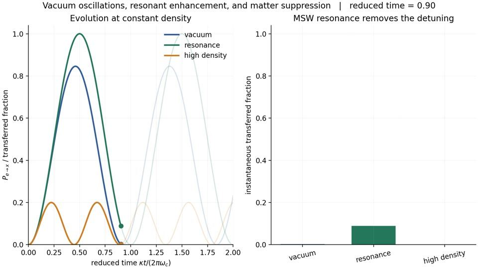
Вакуумные осцилляции, резонанс и подавление: механическая модельVacuum oscillations, resonance and suppression: a mechanical modelQR 0021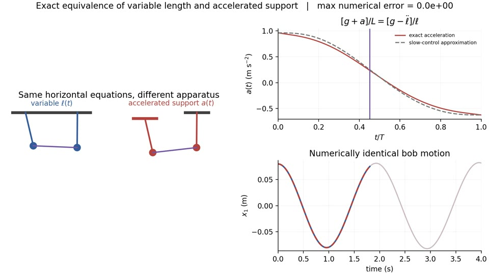
Маятник переменной длины и маятник с ускоренной опоройA pendulum of variable length and a pendulum with an accelerated supportQR 0022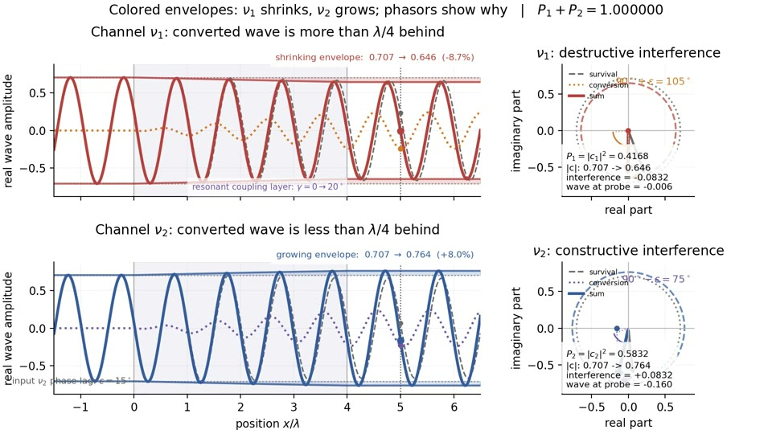
Интерференция волн и фазоров в тонком резонансном слоеInterference of waves and phasors in a thin resonant layerQR 0023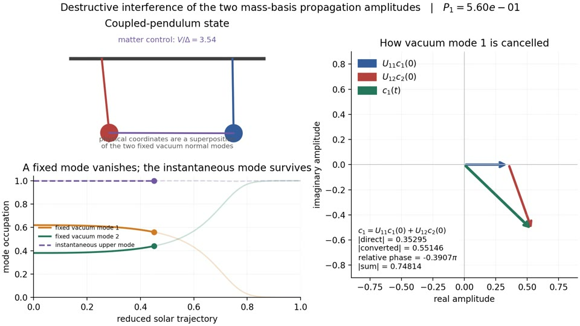
Деструктивная интерференция амплитуд конечной моды $\nu_1$Destructive interference of the amplitudes of the final mode $\nu_1$QR 0024